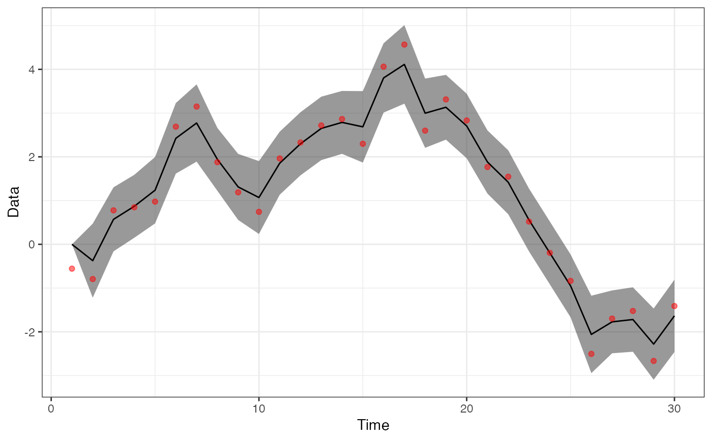

Fit a univariate MARSS model with TMB.
uniTMB(y, estimate_drift = TRUE, estimate_rho = FALSE)the data. Can have NAs.
estimate the u parameter
estimate b parameter
A data frame with estimates and se's
library(ggplot2)
set.seed(123)
x = cumsum(rnorm(30))
y = x + rnorm(length(x), 0, 0.01)
estimate_drift = TRUE # U in MARSS
estimate_rho = FALSE # AR(1) parameter, b in MARSS
res <- uniTMB(y)
res$coef
#> name estimate se
#> 1 u -0.0563705 0.1457832
#> 2 obs_sigma 0.4409820 0.1511969
#> 3 pro_sigma 0.7813052 0.1638419
ggplot(res$df, aes(t, pred)) +
geom_ribbon(aes(ymin=pred-2*se, ymax = pred+2*se),alpha=0.5) +
geom_line() +
geom_point(aes(t,y),col="red",alpha=0.5) +
xlab("Time") + ylab("Data") +
theme_bw()
